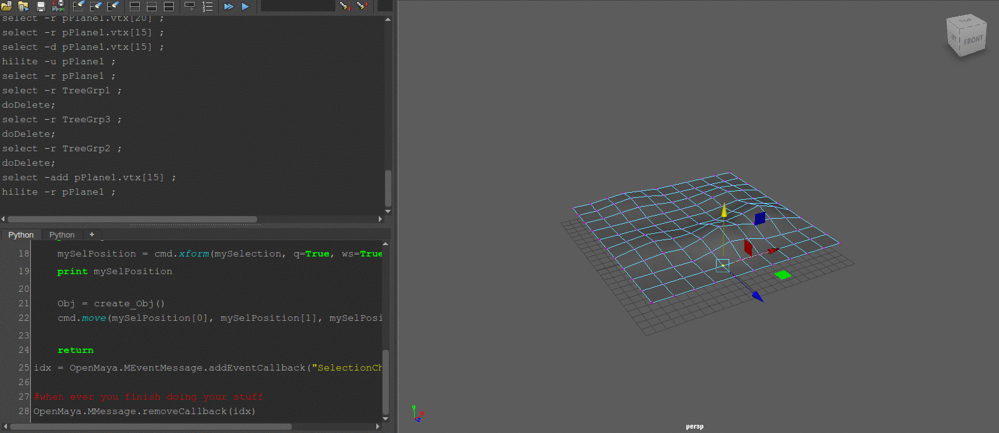

前言
法一：
http://discourse.techart.online/t/execute-python-script-in-maya-on-double-click/2171
http://download.autodesk.com/us/maya/2010help/CommandsPython/draggerContext.html
draggerContext
法二：
https://stackoverflow.com/questions/32090392/how-to-get-from-maya-event-of-a-change-highlight-objects-in-the-scene
https://www.mail-archive.com/python_inside_maya@googlegroups.com/msg06838.html
http://help.autodesk.com/view/MAYAUL/2017/ENU/?guid=__py_ref_class_open_maya_1_1_m_event_message_html
http://discourse.techart.online/t/how-to-properly-define-callbacks-and-delete-them-later-in-maya/6041
|
|
凸型平面作法
- 建立平面
- select by component type
- press B
- use move tool
Demo

凸型平面作法
- 建立平面
- select by component type
- press B
Troubleshooting
Python compiler error, x takes no arguments (1 given)
https://stackoverflow.com/questions/4445405/python-compiler-error-x-takes-no-arguments-1-given
def function(self):
參考
https://www.youtube.com/watch?v=hDDgs3hrSsU&list=PLdQnt7xu73OXBjKNlsA-lX9tWATVUjtA9&index=6